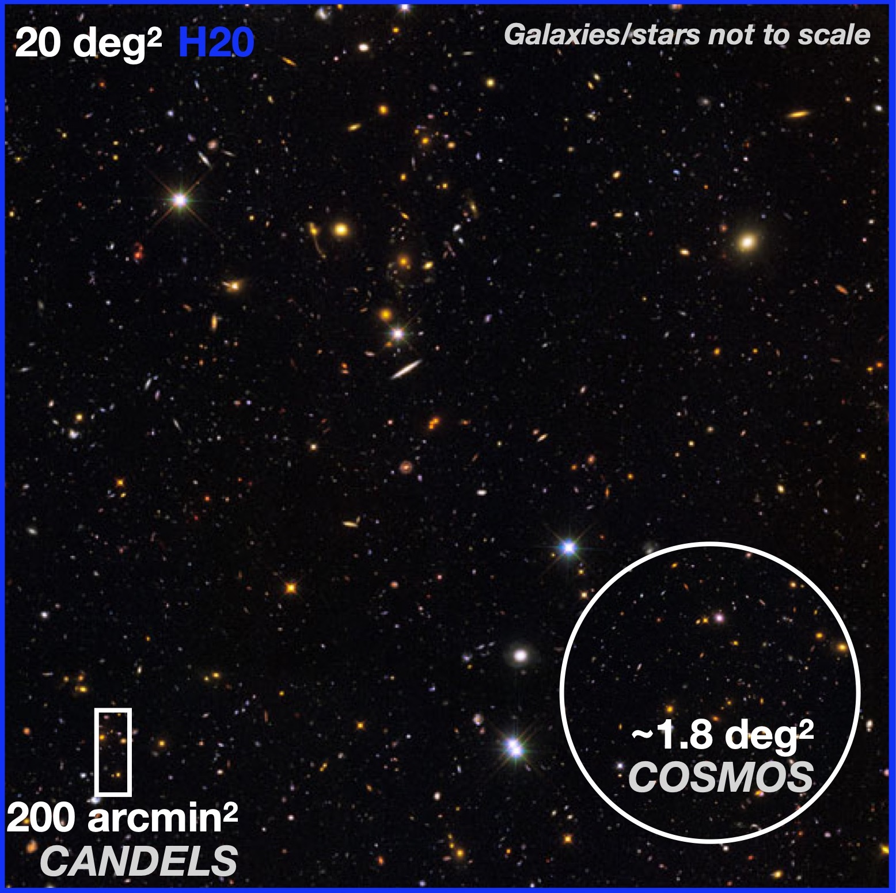
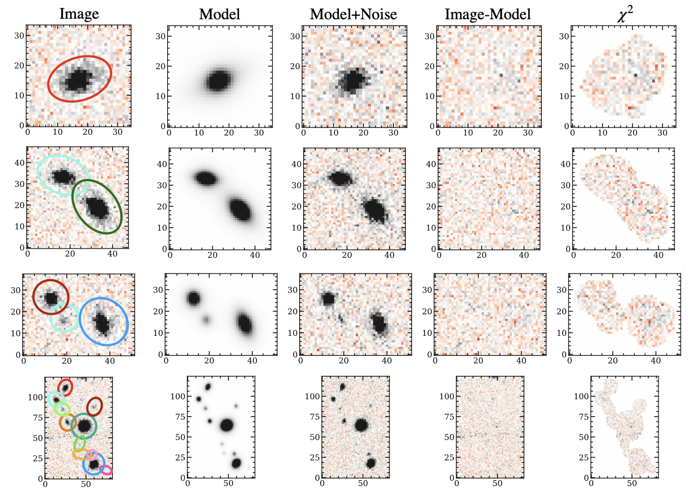
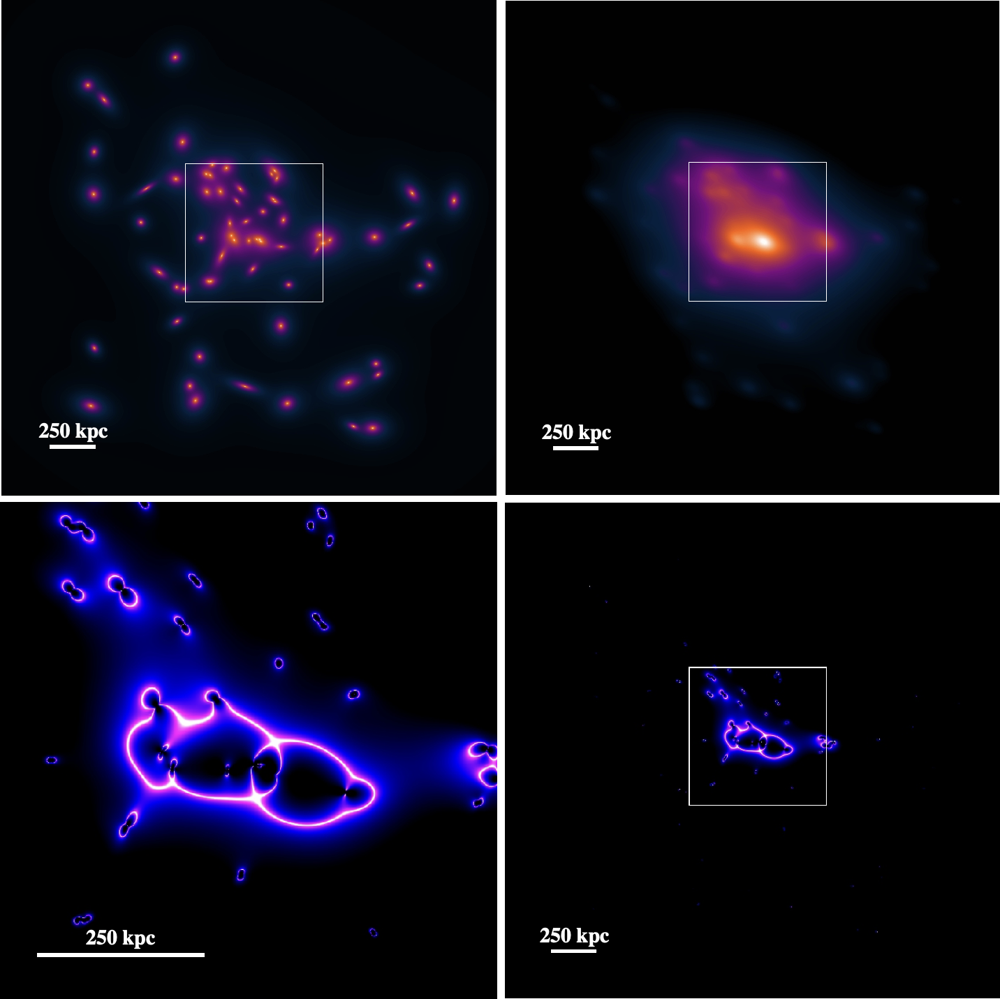
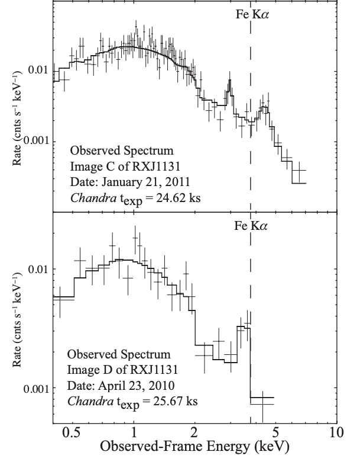
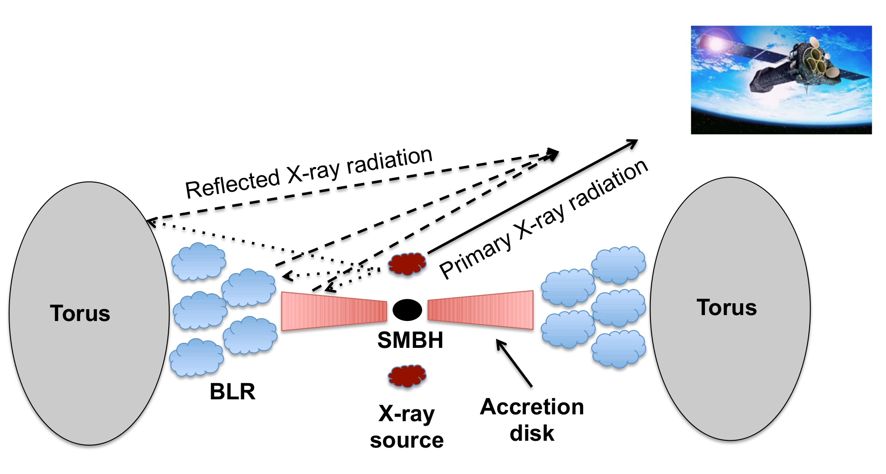

"All truths are easy to understand once they are discovered; the point is to discover them" - Galileo
A summary of previous, ongoing, and completed projects
As an extragalactic astronomer, I am interested in phenomena beyond our home galaxy. My research interests include
supermassive black holes, gravitational lensing, and galaxy evolution, with
an emphasis on the first few billion years after the Big Bang. Below you'll find descriptions of the different projects
I've been involved in. Full ADS history.

The Hawaii Twenty Square Degree Survey
The Hawaii Twenty Square Degree Survey (Hawaii Two-0, or H20) is an ultra-deep (AB mag < 27.5) survey covering two of the most easily accessed areas
of the sky by spacecraft in polar orbits: the North Ecliptic Pole (NEP) and the Euclid Deep Field Fornax (EDFF; overlapping with the Chandra Deep Field South).
This survey primarily involves Subaru Hyper Suprime-Cam imaging and Keck DEIMOS spectroscopy while also benefitting from the largest allocation of Spitzer
IRAC imaging ever granted (~ 5300 hours) via the Spitzer Legacy Survey. These data together enable numerous endeavors in high-redshift science focused on
galaxy formation/evolution and cosmology.
I am leading the acquisition of photometry for the ~ 20 million sources detected in our survey and the characterization
of their spectral energy distributions. For my dissertation, I am using these data to measure the galaxy stellar mass function (the number of galaxies per unit co-moving
volume as a function of stellar mass) at z > 3.
See our website for more information, including up-to-date progress reports and details regarding data access.
The Farmer Model-Based Photometry
As our images of the night sky become ever-deeper, new methods for photometry become advantageous, and in some cases, even necessary.
As the depth of survey imaging increases, so does the fraction of sources that overlap with one another. Moreover, surveys ought to be
able to make use of high-resolution information present in some images but not in others. Addressing both of these concerns is the
aim of The Tractor, which enables robust profile fitting of sources using physically motivated models. With The Tractor,
sources nearby to each other can be modeled simultaneously to account for their overlapping flux, and models can also be built on high-resolution imaging
(e.g., optical imaging) and subsequently forced onto lower resolution imaging (e.g., infrared imaging).
The Tractor only provides models and methods for optimizing the models.
We have developed The Farmer, a new code in python that wraps The Tractor and provides all of the in-between steps needed by a full-scale photometry pipeline.
The Farmer handles everything from source detection, to model fitting using The Tractor, to final catalog creation. All it requires is the input images.
See more in our paper, or check out the code/resources page for access to the code and documentation.


AStroLens: Automatic Strong-Lens Modeling
Gravitational lensing by galaxy clusters enable a number of avenues for scientific inquiry. I have built a new code in python called AStroLens, which is short for
automatic strong-lensing analysis. Unlike other codes, which require numerous constraints to produce credible lens models, AStroLens only requires the
photometric and geometric properties of cluster galaxies. Because of this, AStroLens can quickly model many galaxy clusters at once while requiring only standard
imaging. AStroLens is able to do this by 1) assuming that the light of cluster galaxies (which are not collisional) approximately traces
the total distribution of mass (dominated by dark matter, which is also not collisional), and 2) using a set of global parameters which are calibrated on known lensing clusters.
AStroLens takes as input a galaxy catalog and outputs numerous diagnostics including the galaxy cluster's magnification profile.
This code has been validated in two publications, and will soon become publicly available
through my code/resources page.

Measuring the Properties of AGN Accretion Disks with X-ray Spectroscopy
Active Galactic Nuclei (AGN) emit across all wavelengths. X-ray emission from AGN is useful for understanding
properties of the supermassive black hole (SMBH) accretion disk. As shown in the figure below, one component of the observed
X-ray emission is "reflected" by the accretion disk. As this reflection can occur very near to the
event horizon of the black hole, both where the rotational velocity of the disk is maximized and where gravitational effects are
most extreme, the observed energy of X-ray emission can be dramatically affected both by Doppler and general relativistic effects.
In particular, these energy shifts encode information
about the accretion disk, such as its innermost stable circular orbit and its inclination angle. The former can be used to constrain the
spin of the black hole.
We have devised a new method using X-ray spectroscopy to measure the energy shifts of X-ray emission lines thereby directly constraining
both the spins of supermassive black holes and their accretion disk inclination angles. Our method exploits gravitational microlensing,
which can reveal narrow X-ray emission features otherwise too faint to resolve.
Read more about this method in our paper.

Figure credit: this website.